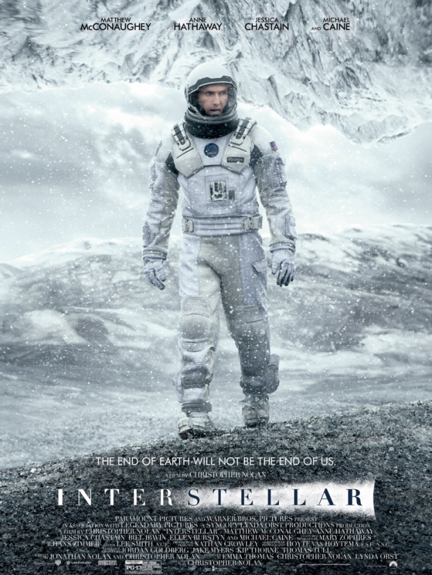
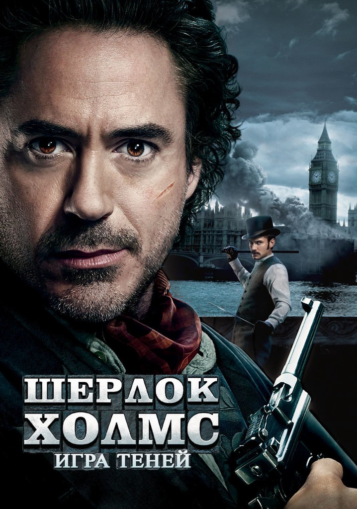
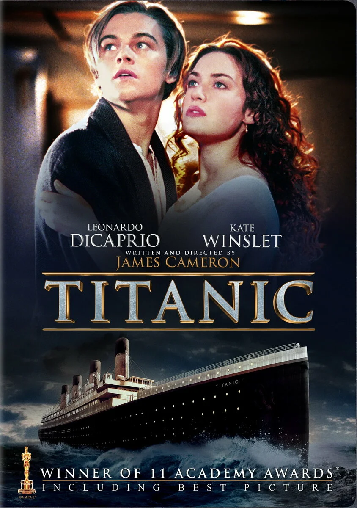
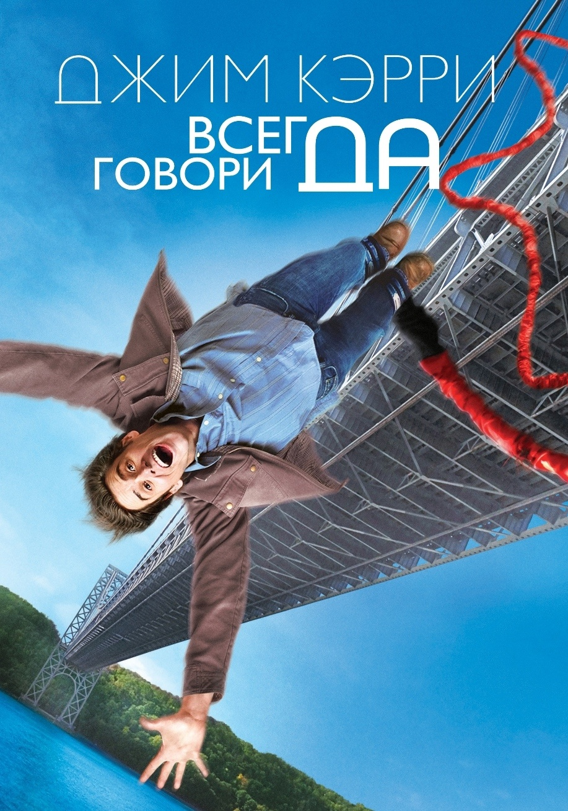
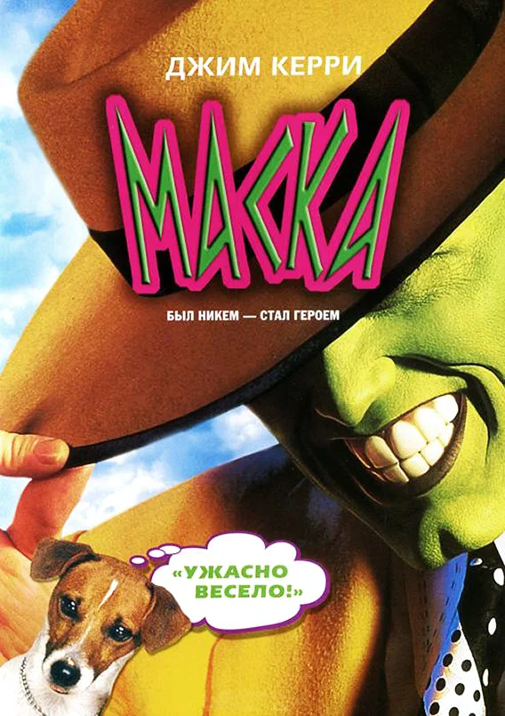
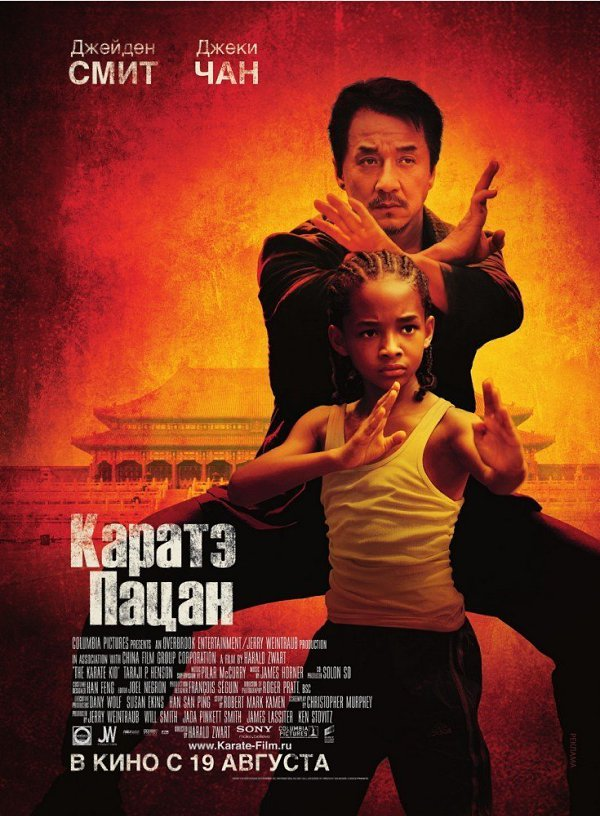
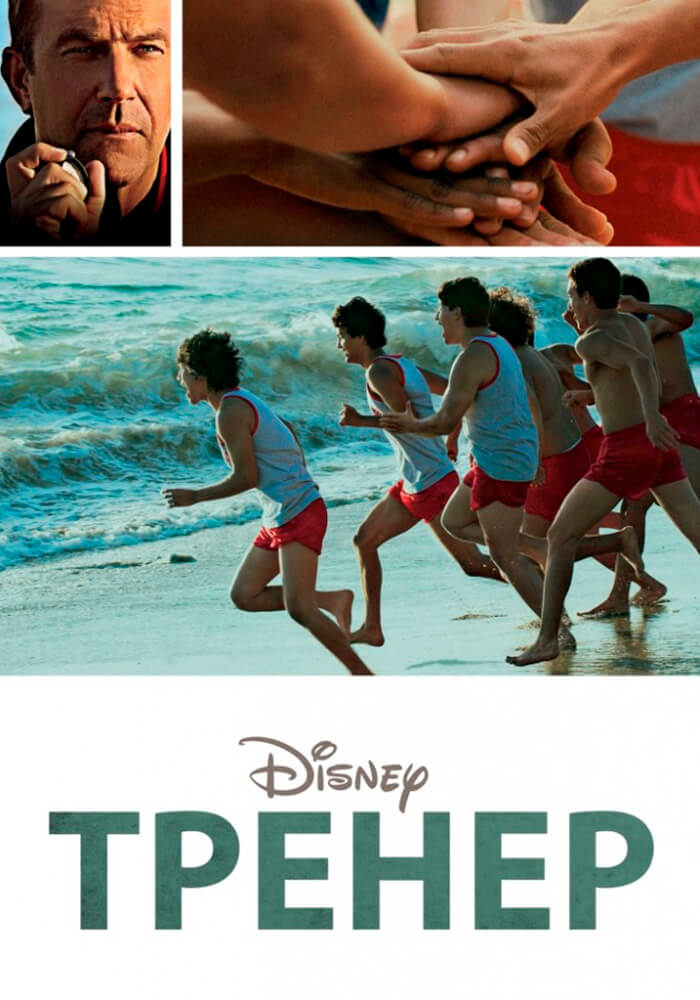
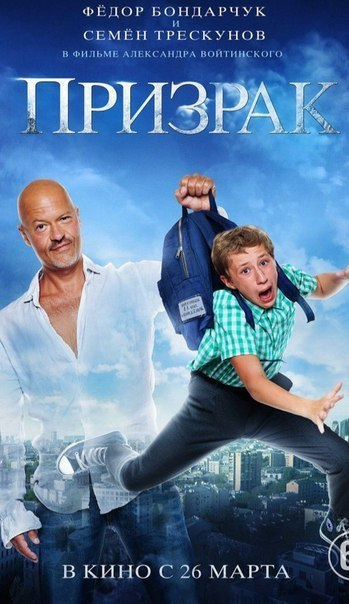
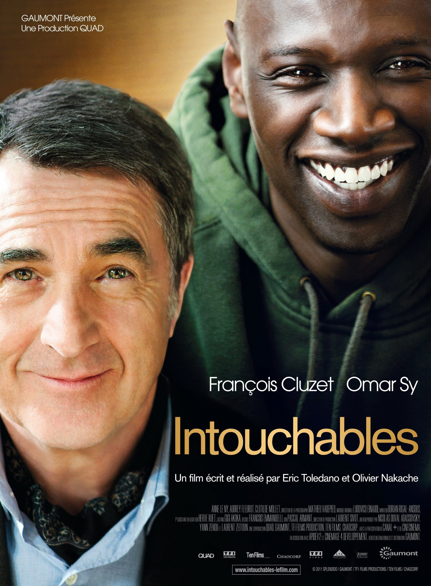

Хорошее кино получается из интересного сценария, красивой операторской работы, талантливого режиссёра и талантливых актёров.
Бывает так, что все эти составляющие идеальны, и тогда фильм становится культовым. Его хвалят критики, смотрят и пересматривают миллионы людей, а актёры, снявшиеся в таком кино, становятся легендами.
В этой подборке вы найдёте именно такие фильмы – каждый можно пересматривать снова и снова, наслаждаясь каждой сценой или поворотом сюжета.
Выбирайте себе шедевр на вечер☕:
1)НАЗАД В БУДУЩЕЕ

Подросток Марти с помощью машины времени, сооружённой его другом-профессором доком Брауном, попадает из 80-х в далекие 50-е. Там он встречается со своими будущими родителями, ещё подростками, и другом-профессором, совсем молодым. Ссылка на фильм
2)ИНТЕРСТЕЛЛАР

Когда засуха, пыльные бури и вымирание растений приводят человечество к продовольственному кризису, коллектив исследователей и учёных отправляется сквозь червоточину (которая предположительно соединяет области пространства-времени через большое расстояние) в путешествие, чтобы превзойти прежние ограничения для космических путешествий человека и найти планету с подходящими для человечества условиями.Но всё ещё сложнее чем кажется... ссылка на фильм
3)ШЕРЛОК ХОЛМС

1891 год. В Вене и Страсбурге проходит серия терактов, организованных анархистами или националистами, а по всей Европе происходят таинственные убийства. Шерлок Холмс считает, что за всем этим стоит профессор Джеймс Мориарти — математический гений, автор знаменитых лекций и трудов. ссылка на фильм
4)ТИТАНИК

В первом и последнем плавании шикарного «Титаника» встречаются двое. Пассажир нижней палубы Джек выиграл билет в карты, а богатая наследница Роза отправляется в Америку, чтобы выйти замуж по расчёту. Чувства молодых людей только успевают расцвести, и даже не классовые различия создадут испытания влюблённым, а айсберг, вставший на пути считавшегося непотопляемым лайнера.ссылка на фильм
5)ВСЕГДА ГОВОРИ ДА

Депрессивный главный герой всегда и всем говорил «нет» — например, друзьям, если они зовут куда-то. Но в один прекрасный день он заключает соглашение, по которому всегда должен отвечать «Да» на любое предложение.ссылка на фильм
6)МАСКА

Скромный и застенчивый служащий банка чувствует себя неуверенно с красивыми девушками и вообще рядом с людьми. Волей судьбы к нему попадает волшебная маска, и Стенли Ипкис приобретает способность превращаться в неуязвимое мультяшное существо с озорным характером.ссылка на фильм
7)КАРАТЭ ПАЦАН

Двенадцатилетний Дре Паркер вместе с матерью-одиночкой переезжает из Детройта в незнакомый Пекин, не зная языка и местных традиций. Здесь он встречает китайскую девочку Мей Ин. Однако кроме её отца, не одобряющего их дружбу из-за культурных предрассудков, на его пути встаёт банда хулиганов во главе с Ченом, владеющим искусством кунг-фу. Единственный способ победить его — встретиться с врагом на близящемся грандиозном турнире боевых искусств. В этом мальчику решает помочь знаток боевых искусств мистер Хан.ссылка на фильм
8)ТРЕНЕР

В 1987 году в маленьком городке МакФарланд профессиональный тренер создает команду по легкой атлетике из обычных сорванцов и мелких «хулиганов» и доводит эту команду до вершины спортивного Олимпа.ссылка на фильм
9)ПРИЗРАК

Еще вчера Юрий Гордеев — амбициозный авиаконструктор и любимец женщин — был в шаге от своего триумфа. Его самолет ЮГ-1 должен был стать настоящим прорывом в отечественной авиации. Но сегодня его никто не видит и не слышит, и конкурент по бизнесу беспрепятственно закрывает его компанию. Все потому, что Юра разбился в автокатастрофе и стал призраком. Школьник Ваня Кузнецов был пустым местом всегда. Жертва гиперопеки матери, объект насмешек одноклассников, он боится даже заговорить с девочкой, в которую давно влюблен. У Юры есть неделя, чтобы закончить дело своей жизни и поднять самолет в воздух. Ваня — единственный, кто его видит и может ему помочь.ссылка на фильм
10)1+1

Пострадав в результате несчастного случая, богатый аристократ Филипп нанимает в помощники человека, который менее всего подходит для этой работы, – молодого жителя предместья Дрисса, только что освободившегося из тюрьмы. Несмотря на то, что Филипп прикован к инвалидному креслу, Дриссу удается привнести в размеренную жизнь аристократа дух приключений.ссылка на фильм
11)ЗАПАХ ЖЕНЩИНЫ

Наступил День благодарения, и отставной полковник разведки Фрэнк Слэйд решает справить праздник, побаловав себя поездкой в Нью-Йорк. Фрэнк хочет обставить свой последний «коронный выход» по высшему разряду: изысканный отель, шикарный лимузин, дорогая выпивка и женщины потрясающей красоты. Есть лишь две проблемы. Первая: Фрэнк слеп на оба глаза. И вторая: волнующиеся родственники полковника решают нанять за небольшую сумму провожатого в лице нуждающегося студента престижного колледжа по имени Чарли Симмз. Последнее, что было нужно в поездке полковнику Слэйду - так это «зеленый» юнец Чарли. Но случилось так, что путешествие этих двух потрясающе непохожих друг на друга людей изменило их жизни навсегда.ссылка на фильм